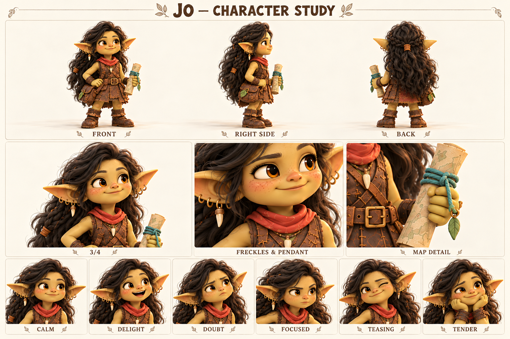

Чего хочет
Составить полезную карту троп и доводить спутников до места без неприятных сюрпризов.
Умеет находить дорогу по мелочам и учится оставлять в своих планах место непредвиденному.
Jo в английской версии, Лума в русской; взрослая следопытка и равноправная спутница Тиша.

Длинные тёмно-шоколадные волнистые волосы; янтарные глаза; веснушки; кожаная туника; терракотовый платок; карта.
Палитра: Тёмный шоколад / терракота / оливковое золото / бирюзовый шнур.
Jo начала рисовать карты не ради дальних стран, а чтобы объяснять знакомые места другим: где после дождя скользко, у какого корня удобно присесть, откуда слышен ручей. Её ранние схемы были больше похожи на заметки наблюдателя, чем на строгие чертежи. Шал научил её смотреть на воду, а Корень — на износ настила. Постепенно она стала тем человеком, которого спрашивают о дороге.
Однажды удобная тропа изменилась после непогоды. Jo вовремя повернула группу обратно, но долго перепроверяла, не могла ли заметить опасность раньше. Это не тайная трагедия, а источник её привычки готовиться за всех. С Тишем ей нравится лёгкость, которой самой порой не хватает; с Мирой и Уной она может быть не проводницей, а просто подругой. Длинные волосы, маленький кулон и кожаная сумка сохраняют личный образ, не заменяя его ролью «девушки с картой».
В демо она участвует в дружеской гонке и реагирует на результат, сохраняя уважение к Тишу. Победа не делает её наставницей сверху, а поражение — беспомощной. Будущая история может поставить её перед выбором между хорошо проверенным обходом и коротким путём, замеченным другим. Её рост — принять наблюдение друга и остаться собой, даже когда правильное решение пришло не от неё.
Составить полезную карту троп и доводить спутников до места без неприятных сюрпризов.
Разделять ответственность и доверять чужому наблюдению, не проверяя его бесконечно.
Не заметить важную мелочь и подвести тех, кто пошёл за ней.
Иногда превращает заботу в контроль; слишком быстро предлагает своё исправление.
Внимательна, последовательна, умеет объяснить сложное через один видимый ориентир.
Любит неизвестные места, но плохо переносит неизвестность в плане.
Темп и ритм. Ровный, уверенный; короткое наблюдение, затем понятное предложение.
Слова и построение фразы. Посмотри, край, след, кажется, проверим, здесь. Уточняет основание решения.
Юмор. Суховатая тёплая ирония и приподнятая бровь, особенно рядом с Тишем.
Под давлением. Становится чрезмерно точной и перечисляет лишние условия; затем учится сокращать до одного шага.
Как проявляет заботу. Объясняет, что именно насторожило, и оставляет собеседнику выбор.
Чего избегать. Не читать длинные лекции, не быть вечной правой мамой команды, не говорить за всех.
| Ситуация | Реплика или действие |
|---|---|
| Знакомство | Я Лума. Если идёшь к перевалу, покажу сухую тропу. |
| Наблюдение | Видишь светлый край? Этот камень качается. |
| Гонка | Договорились: кто первый — тот ждёт второго. |
| Поражение | Хороший ход. Я заметила этот проход слишком поздно. |
| С Тишем | Ты уже пошёл. Теперь давай выясним куда. |
| Доверие | Я этого не заметила. Веди, я посмотрю вместе с тобой. |
| Подпись на листе | Состояние | Актёрская задача |
|---|---|---|
| CALM | Спокойствие | Открытый внимательный взгляд, карта не заслоняет лицо. |
| DELIGHT | Восторг | Улыбка шире обычного, брови вверх, волосы следуют повороту головы. |
| DOUBT | Сомнение | Одна бровь выше, губы чуть сжаты, взгляд на предмет. |
| FOCUSED | Сосредоточенность | Взгляд устойчив, подбородок немного опущен. |
| TEASING | Поддразнивание | Небольшая улыбка одним уголком, мягкий прищур. |
| TENDER | Нежность | Лицо расслаблено, взгляд возвращается к собеседнику, без кокетливой карикатуры. |
Движение: Перед действием коротко проверяет поверхность взглядом; убирает волосы с лица и только затем разворачивает карту. В радости может забыть сложить её аккуратно.
| План | Что показывает |
|---|---|
| Общий план спереди | Силуэт, лицо, одежда, положение ступней; без потери главных признаков. |
| Боковой ракурс | Глубина фигуры, профиль лица, предметы на ремнях и посадка одежды. |
| Вид со спины | Причёска, крепления, рюкзак либо панцирь; признаки не зеркалятся. |
| Средний план в три четверти | Лицо вместе с характерным жестом и позой корпуса. |
| Крупные детали | Материал и узнаваемые предметы; особенности лица, уха, руки или панциря. |
| Шесть эмоциональных портретов | Взгляд, брови, рот и положение головы; у существ также усики, крылья и поза. |
Совместная карта, на которой рядом существуют точность Jo, рисунки Фики и звуковые ориентиры Уны.